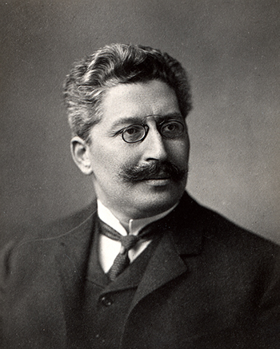

Die Selbstreflexion einer Disziplin ist stets auch ein Spiegelbild des Bewusstseins um die Zeitgebundenheit geisteswissenschaftlicher Forschung. Die Möglichkeit einer fundierten Beschreibung von historischen Wissenschaftskulturen steht und fällt freilich mit geeigneten, hinreichend expliziten und komplexen Quellenlagen. Archivalien sind nicht aufgrund ihrer anekdotenhaften Einzelaussage von Interesse, vielmehr hängt die Qualität immer auch von der Möglichkeit einer Vielansichtigkeit ab, die eine Kontrolle der Beobachtungen erlaubt.
Diese Aspekte erhalten herausragende Bedeutung, wenn Biographien mit reicher Beleglage große Brüche der Geschichte überbrücken. Kaum eine Ägyptologen-Biographie des 19. – 20. Jahrhunderts ist so gut dokumentiert und geeignet, das Fach Ägyptologie von der Blütezeit des Kaiserreichs durch den 1. Weltkrieg und die deutsche Revolution, die Weimarer Republik, die NS-Zeit und den 2. Weltkrieg hindurch bis zur Neuordnung der Nachkriegszeit unter dem Vorzeichen der Re-Demokratisierung der westlichen Gesellschaften widerzuspiegeln und dabei in einer Vielzahl von Archiven unterschiedlichen Charakters in variierenden Rollen nachvollziehbar zu sein, wie die Georg Steindorffs.
Georg Steindorff wird 1861 im Herzogtum Anhalt in eine jüdische Familie des Dessauer Bürgertums geboren. Er entwickelt sich zu einem typischen Vertreter des dynamischen Pioniertums der Zeit der Zweiten Industriellen Revolution im Kaiserreich und pflegt freundschaftliche Kontakte mit dem sächsischen Königshaus. Für eine Teilnahme im Ersten Weltkrieg ist er bereits zu alt. Dank seiner Rolle in der Ägyptologie als Herausgeber des bedeutendsten Fachjournals, der Zeitschrift für Ägyptische Sprache und Altertumskunde (ZÄS), und dank seiner engen Verbundenheit mit dem Doyen der deutschen Ägyptologie, Adolf Erman, erreicht er in der Weimarer Republik eine unantastbare Position in der Sächsischen Akademie der Wissenschaften, der Zentraldirektion des Deutschen Archäologischen Instituts und der Universität Leipzig, als deren Rektor er 1923/24 amtiert. Steindorff war bereits während seines Studiums in den 80er-Jahren des 19. Jahrhunderts zum Protestantismus konvertiert, gerät aber aufgrund seiner jüdischen Herkunft bald in das Visier der nationalsozialistischen Rassenideologie. Auf das Berufsverbot 1934 folgt nach weiteren Repressionen im März 1939 die Emigration in die USA.

Steindorffs Tagebücher und Briefe thematisieren neben wissenschaftlichen Fragen immer wieder auch die politischen Vorgänge in Deutschland und Europa. Unmittelbar nach Kriegsende setzt der briefliche Kontakt mit vielen akademischen Verantwortungsträgern der Ägyptologie in Deutschland wieder ein. Der international anerkannte, nunmehr 84jährige Wissenschaftler wird zum regen Kommentator der NS-Diktatur und der Verstrickung einzelner Exponenten. Zugleich beobachtet er aus der Ferne bis zu seinem Tod im Sommer 1951 aufmerksam die Entwicklung an seiner alten Wirkungsstätte und Akademie in der sowjetisch besetzten Zone und der gerade gegründeten DDR.
Steindorffs Lebenslauf ist ein eindrückliches Beispiel für den Weg eines Angehörigen des emanzipierten jüdischen Bürgertums, der dank seines Engagement, seiner Begabung und Begeisterungsfähigkeit seinen Weg bis an die Spitze der Institutionen bewältigte und an dem vor und zwischen den beiden Weltkriegen kein ägyptologischer Weg vorbei führte. Seine rege Vortragstätigkeit auch vor fachfremdem Publikum mutet heute geradezu modern an. Mit dem zielstrebigen Aufbau der noch heute größten akademischen Lehrschausammlung an einer deutschen Universität verschaffte er seinem Wissenschaftsstandort Leipzig über die deutschen Grenzen hinaus Bedeutung. Gleiches gilt für seine Richtung gebende Rolle in den Konflikten seiner Generation um das Primat der ägyptologischen Methodik und ihr e r theoriegeladene Entwürfe der 1920er- und 1930er-Jahre, deren Auswirkungen heute aus dem Bewusstsein verschwunden sind obwohl sie die Ägyptologie der Nachkriegszeit maßgeblich geprägt.
Die Bedeutung dieser Persönlichkeit wird vor allem über seinen Briefnachlass vielschichtig dokumentiert. Die Schenkung der Privatkorrespondenz von Georg Steindorff durch seinen Enkel Thomas Hemer an die Universität Leipzig hat die Erforschung und die Veröffentlichung bei ARACHNE erst ermöglicht. Ihm gilt von daher der größte Dank. Das Archivalienkonvolut umfasst über 6000 Einzelblätter aus den Jahren 1884-1951. Er wurde innerhalb des Forschungsprojekts "Wissenshintergründe und Forschungstransfer am Beispiel des Ägyptologen Georg Steindorff" von 2013 - 2015 mit Unterstützung der Deutschen Forschungsgemeinschaft durchgeführt. Die Publikation der Ergebnisse wird 2016 erscheinen: Susanne Voss und Dietrich Raue (Hgg.), Wissenshintergründe und Forschungstransfer am Beispiel des Ägyptologen Georg Steindorff, Beihefte der Zeitschrift für Ägyptische Sprache und Altertumskunde 3, Berlin: De Gruyter 2016.
Sie stellen einen ersten Erschließungsschritt dar, an dem neben den Herausgebern Alexandra Cappel, Thomas Gertzen und Kerstin Seidel mitwirkten. Die online-Stellung des Archivs bei ARACHNE soll es einem weiten Kreis an wissenschaftsgeschichtlich interessiertem Publikum ermöglichen, weitere Forschungsschwerpunkte zu erarbeiten.
Susanne Voss – Dietrich Raue